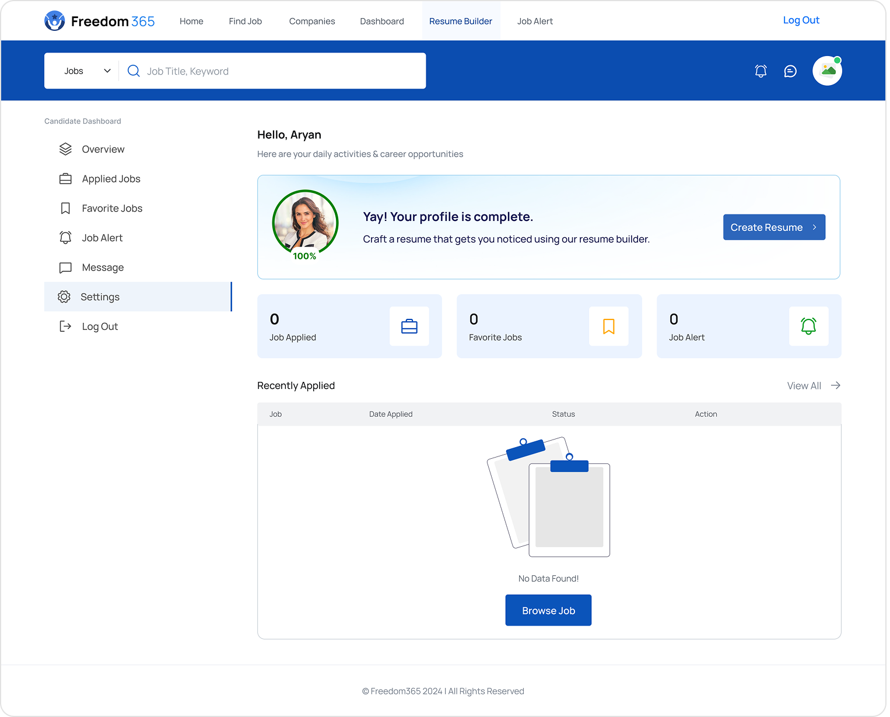
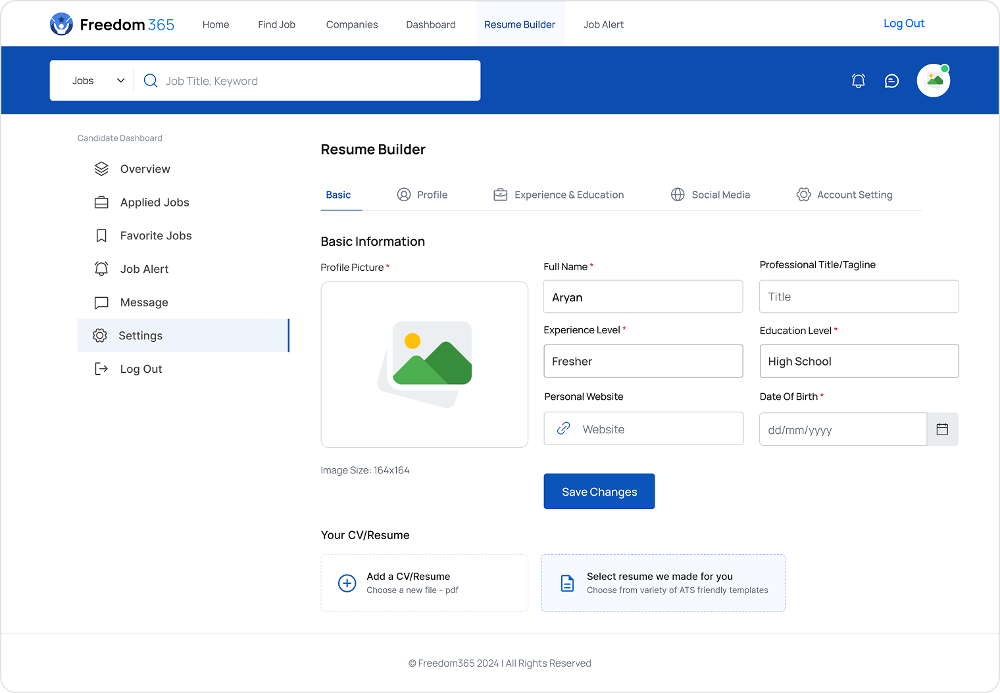
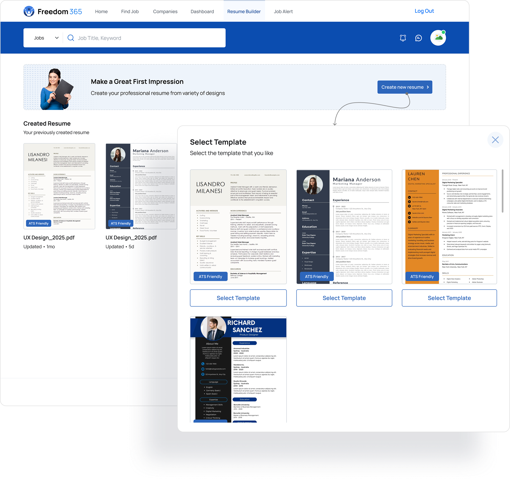
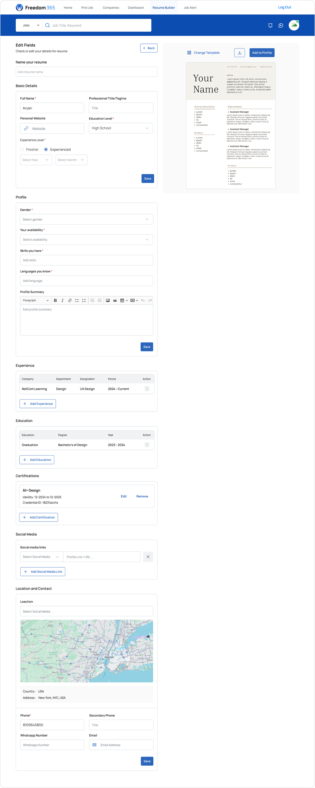

Repetitive data entry across job sites
Complex, cluttered resume builders
Inconsistent resume formatting affecting ATS scans
Lack of modern, customizable templates

Optimizing the Job Application Journey Through Smart Resume Design
UX Designer
8 Weeks
Web Application
Figma, FigJam, Confluence, Jira
The Freedom 365 Resume Builder helps registered users easily create, customize, and export professional resumes. It connects directly with the Freedom 365 Job Portal, so users can either apply with their existing resume or reuse the same resume on other job platforms.
To make resume creation faster, simpler, and more effective for job seekers.


Many job seekers waste time repeatedly entering the same information on different portals and struggle to make resumes that look professional and ATS-friendly. These are the problems we identified:
Repetitive data entry across job sites
Complex, cluttered resume builders
Inconsistent resume formatting affecting ATS scans
Lack of modern, customizable templates
Design a seamless, guided experience that allows users to build a polished resume quickly — with templates optimized for ATS and exportable for use anywhere.
5 Participants
25 Responses
Canva, Novoresume, Naukri
Found existing resume builders too lengthy or confusing
Wanted auto-filled data from existing profiles
Reuse one resume for multiple job portals
Preferred ATS-friendly, clean and minimal resume templates
Reduce resume creation time by 40%
Enable resume export in PDF and DOCX formats
Integrate profile data auto-fill for faster setup
Offer 3–5 clean, ATS-friendly templates
During ideation, I explored two primary approaches for the resume creation process:
A sequential form flow that asks users to enter information one section at a time (Personal → Education → Experience → Skills → etc.).
ProsSimple and beginner-friendly
Reduces overwhelm by revealing one section at a time
Users often needed to go back and forth to edit or re-check data
Felt slow and rigid for users who already had resume information ready
Increased cognitive load because users couldn’t see the resume taking shape as they filled it
All information fields are available from the start, with the resume preview updating instantly on the side.
ProsUsers can move freely between fields based on what they remember first
Easier to make quick edits or corrections
Fits the mental model of “editing a document” rather than “filling a form”
Live preview provides immediate visual feedback
Faster resume creation for returning users
Could feel slightly overwhelming for first-time users (addressed through clean layout + clear labeling)
Data collected via Usability Testing & Interviews
Method: Prototype Testing with 5 Users
Create a new resume
Edit details in already created resume using Resume builder
Export the resume in variety of formats like PDF, Word, TXT.
Users loved auto-fill from profile
Requested character counters in description fields
Wanted live preview toggle for instant feedback
Experienced friction while editing, going back and forth each step, was a tedious task
Task success rate
Average resume build time.
User Satisfaction
Task success rate
Average resume build time.
User Satisfaction
During testing, we noticed a common pattern: Users don’t think in a linear order when recalling and entering resume information.
Someone might remember their skills first, then their education, then their job history, and jump around in that order. The step-by-step flow restricted them — the workspace approach supported their natural thought process.
After an iterative design journey we finalized the design of the resume builder.
Prompting the user on the dashboard to remind them to create a resume
Profile menu for the users to fill their profile, which helps in creating the resume as well
A dedicated Resume builder page for the users to access their previously created resumes, with a temporary banner style message to create new resume.
An editor page for the users to edit the details if they wish to, with all the fields presented to the users to easily go to the desired field they want to change, with auto-save and manual save for each field and a live preview of the resume which updates in real time. Export, changes template, save to profile and more !!
Reduced resume creation time helping users complete resumes faster.
Increased user satisfaction after usability testing.
Boost in job application completion rate on Freedom 365
Users revisited to update or re-export their resume. Increased user engagement
Designing this builder taught me how seamless integrations can improve user flow and retention. It reinforced that great UX isn’t about adding features — it’s about removing friction so users can focus on their goals.